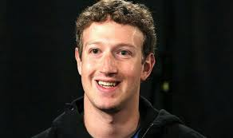
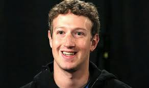

Early Life
 

Mark Elliot Zuckerberg was born on May 14, 1984, in White Plains, New York, into a comfortable, well-educated family, and raised in the nearby village of Dobbs Ferry. His father, Edward Zuckerberg, ran a dental practice attached to the family's home. His mother, Karen, worked as a psychiatrist before the birth of the couple's four children—Mark, Randi, Donna and Arielle.
Zuckerberg developed an interest in computers at an early age; when he was about 12, he used Atari BASIC to create a messaging program he named "Zucknet." His father used the program in his dental office, so that the receptionist could inform him of a new patient without yelling across the room. The family also used Zucknet to communicate within the house. Together with his friends, he also created computer games just for fun. "I had a bunch of friends who were artists," he said. "They'd come over, draw stuff, and I'd build a game out of it."
To keep up with Mark's burgeoning interest in computers, his parents hired private computer tutor David Newman to come to the house once a week and work with Mark. Newman later told reporters that it was hard to stay ahead of the prodigy, who began taking graduate courses at nearby Mercy College around this same time.
Zuckerberg later studied at Phillips Exeter Academy, an exclusive preparatory school in New Hampshire. There he showed talent in fencing, becoming the captain of the school's team. He also excelled in literature, earning a diploma in classics. Yet Zuckerberg remained fascinated by computers, and continued to work on developing new programs. While still in high school, he created an early version of the music software Pandora, which he called Synapse. Several companies—including AOL and Microsoft—expressed an interest in buying the software, and hiring the teenager before graduation. He declined the offers.